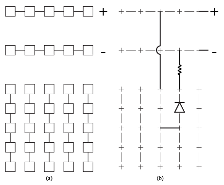

Sly Llama, July 2020
I’ve always been meaning to learn about designing circuits on a breadboard, and for me, the best way to learn is to observe a quality source and make proper notes of my own. I found this video from Simply Electronics (looks like they haven’t updated in a while, unfortunately) which was short, clear, and instructive. So, without further ado, here is my reference diagram featuring an abnormally small breadboard:

See the previous article describing our first steps in flight simulator modification.